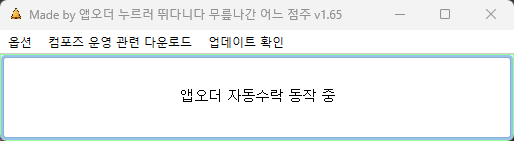
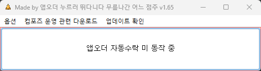
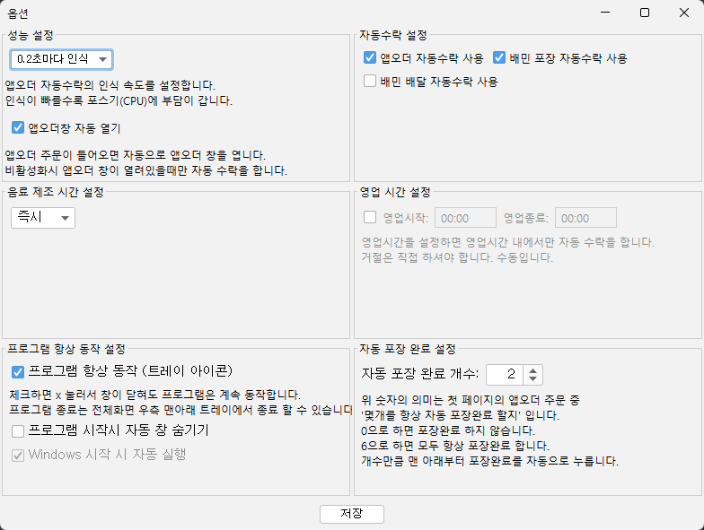
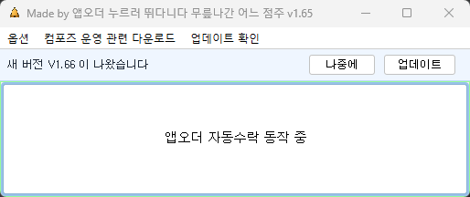

앱오더 자동수락
앱오더·배민 포장 주문이 들어오면 포스기가 알아서 수락합니다. 손님 응대 중에도, 음료 만드는 중에도 주문을 놓치지 않아요.
포스기(Windows)에 설치 · 무료

이런 점이 좋아요
주문 알림에 뛰어가지 않아도 돼요
앱오더 창이 닫혀 있어도 주문이 오면 창을 열어 수락합니다. 배민 포장 주문도 같이 받아요.
버튼을 한 번 누르면 빨간 테두리로 바뀌며 잠시 멈추고, 다시 누르면 이어서 동작합니다.

우리 매장에 맞게 바꿔요
앱오더·배민 포장·배민 배달을 따로 켜고 끕니다. 음료 제조 시간, 영업 시간, 자동으로 포장 완료할 주문 개수도 정할 수 있어요.
포스기가 느린 매장은 인식 간격을 늘리면 부담이 줄어요.

업데이트는 버튼 한 번
새 버전이 나오면 창 위에 알림 띠가 뜹니다. [업데이트]를 누르면 받아서 설치하고 다시 켜져요.
창을 숨겨 두었다면 화면 오른쪽 아래 알림으로 알려 드려요.

켜는 걸 잊어도 괜찮아요
Windows가 켜질 때 함께 실행되고, 창을 닫아도 화면 오른쪽 아래 트레이에서 계속 동작합니다. 둘 다 옵션에서 끌 수 있어요.
설치 방법
포스기에서 순서대로 따라 하세요. 3분이면 끝나요.
-
포스기에서 이 페이지 열기
포스기 인터넷 창 주소창에 아래 주소를 입력하고, 목록에서 앱오더 자동수락을 누르세요.
https://coffee-manager.github.io/compose-apps
-
[설치 파일 받기] 누르기
compose-apporder-setup.exe 파일이 내려받아집니다.
브라우저가 “자주 다운로드되는 파일이 아닙니다”라고 하면 파일 옆 ⋯ → 유지를 누르세요.
-
받은 파일 실행
다운로드 목록이나 ‘다운로드’ 폴더에서 파일을 두 번 누르세요.
파란 Windows의 PC 보호 창이 뜨면 추가 정보 → 실행을 누르세요. 개인이 만든 프로그램이라 인증서가 없어서 나오는 안내예요.
-
[다음] → [설치]
관리자 권한도, Java 설치도 필요 없어요. 기본으로 D:\AppOrder에 설치됩니다. D 드라이브가 없는 포스기는 사용자 폴더에 설치돼요.
-
바탕화면의 ‘앱오더 자동수락’ 실행
초록 테두리 창이 뜨면 끝입니다. 다음부터는 Windows가 켜질 때 알아서 실행돼요.
예전 압축파일(zip) 버전을 쓰셨다면 트레이에서 예전 프로그램을 종료한 뒤 설치하세요. 설정은 그대로 이어지고, 예전 바로가기는 지워도 됩니다. 예전 버전은 자동 업데이트가 안 되니 이번 한 번만 새로 설치해 주세요.
사용 방법
멈추기 / 다시 켜기
창 가운데 버튼을 누릅니다. 초록 테두리는 동작 중, 빨간 테두리는 멈춤이에요.
설정 바꾸기
창 위 메뉴의 [옵션]을 눌러 바꾸고 [저장]을 누르세요.
창이 안 보일 때
화면 오른쪽 아래 트레이(^)에서 아이콘을 두 번 누르면 창이 다시 열려요. 완전히 끄려면 아이콘을 오른쪽 클릭 → Exit.
업데이트 확인
6시간마다 알아서 확인합니다. 바로 확인하려면 메뉴의 [업데이트 확인]을 누르세요.
문제 해결
프로그램은 켜졌는데 주문이 자동수락되지 않아요
대부분 권한 문제입니다. 먼저 확인해 보세요.
- 바탕화면 ‘앱오더 자동수락’을 오른쪽 클릭
- [관리자 권한으로 실행]
- 이제 수락된다면 권한 문제가 맞아요
해결은 둘 중 하나입니다. 앱오더 자동수락을 항상 관리자 권한으로 실행하거나, 포스 프로그램을 일반 권한(관리자 권한 아님)으로 실행하세요. 포스 쪽 설정이 어렵다면 포스뱅크에 문의하면 바꿔 줍니다.
배민 포장 주문만 수락되지 않아요
작업표시줄이 ‘자동 숨기기’ 상태면 배민 포장 알림을 찾지 못합니다. 작업표시줄을 오른쪽 클릭 → 작업 표시줄 설정에서 ‘자동으로 숨기기’를 끄고 고정해 주세요.
“이미 실행 중입니다”라고 나와요
이미 트레이에서 동작 중이에요. 화면 오른쪽 아래 트레이(^)에서 아이콘을 두 번 누르면 창이 열립니다.
포스기가 느려졌어요
[옵션] → 성능 설정에서 인식 간격을 늘려 주세요. 간격이 길수록 포스기 부담이 줄어요.
그 밖의 문제
개발자 문의로 알려 주세요. 어디까지 했는지, 화면에 무엇이 나오는지 사진과 함께 알려 주시면 더 빨리 도와드릴 수 있어요.